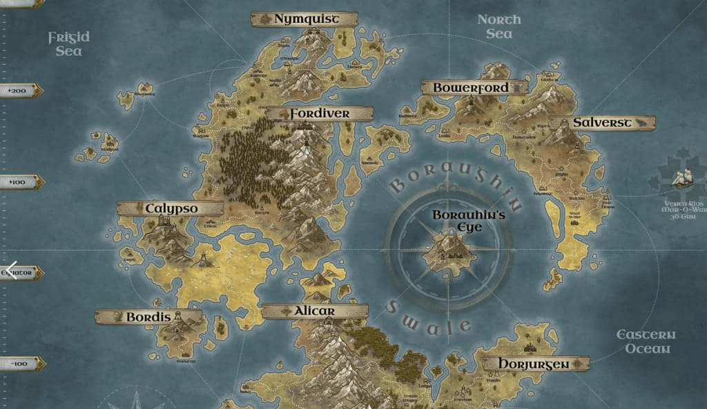
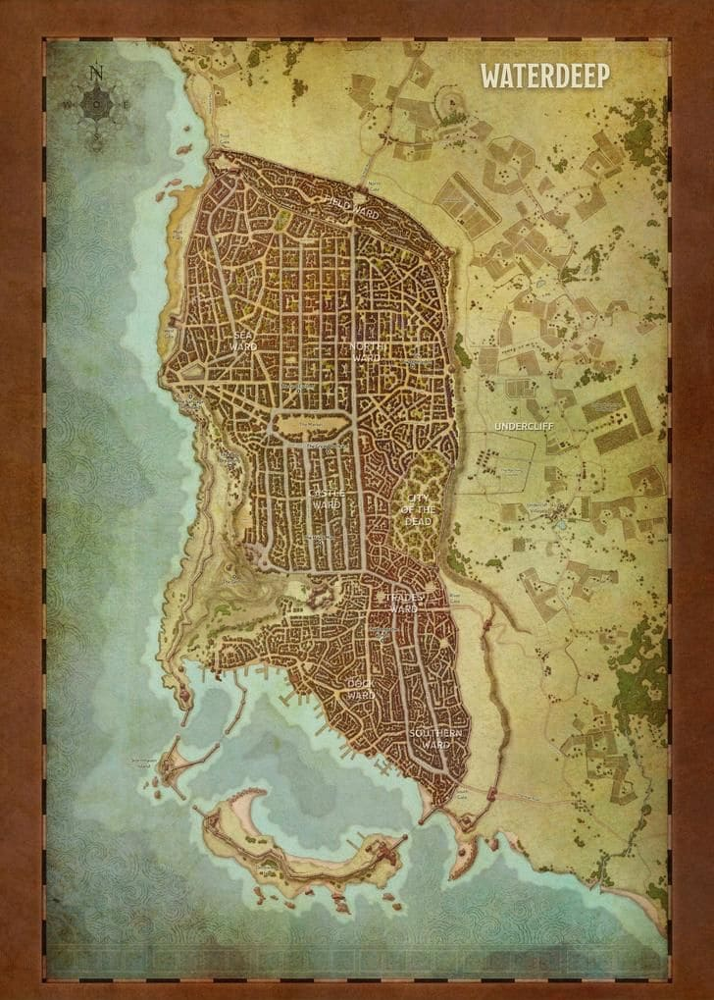

Crear mapas de Mundo

En la creacion de tu mundo de campana, ayuda empezar con las suposiciones basicas y considerar como tu
escenario de campana podria cambiarlas. Las siguientes secciones de este capitulo, estan dirigidas a orientar
cada elemento y dar detalles sobre como profundizar en tu mundo con dioses, facciones, y asi sucesivamente.
Las suposiciones esbozadas anteriormente no estan grabadas en piedra. Inspiran a los emocionantes mundos de
d&d llenos de aventuras, pero no son las unicas suposiciones que puedes aplicar. Puedes construir un
interesante concepto de campana mediante la alteracion de una o mas de las suposiciones basicas, algunos de
los mundos ya creados de d&d lo hacen. Preguntate: "que pasa si las suposiciones estandar no fueran verdad en
mi mundo?
Crear Ciudades

Cuando dibujes el mapa de un asentamiento en tus partidas, no te preocupes acerca de la ubicacion de cada
edificio, y concentrate en cambio en las caracteristicas principales. Para un pueblo, esboza las carreteras,
incluyendo las rutas comerciales mas importantes mas alla del pueblo y las carreteras que conectan las granjas
alejadas del centro del pueblo. Tenga en cuenta la ubicacion del centro del pueblo. Si los aventureros visitan
lugares especificos en el pueblo, marca esos puntos en el mapa. Para los pueblos y ciudades, ten en cuenta las
principales carreteras y vias navegables, asi como el terreno circundante. Haz un boceto de las murallas y
marca las ubicaciones de las lugares que sabes que seran importantes: fortaleza del senor, templos
importantes, y similares. Para las ciudades, anade murallas internas y piensa en la personalidad de cada
distrito. Dale a los distritos nombres que reflejen sus personalidades, que tambien identifiquen los tipos de
comercios que dominan la vecindad (plaza de curtiduria, avenida de los templos), un rasgo geografico (cumbre,
ribera), o un sitio dominante (distrito de los senores).
¿Y las mazmorras?
Algunas mazmorras son viejos feudos abandonados por los habitantes que las construyeron. Otros son cuevas
naturales o extranas guaridas labradas por monstruos asquerosos. Atraen a cultos malignos, tribus de monstruos
y criaturas solitarias. Las mazmorras tambien son el hogar de antiguos tesoros: monedas, joyas, objetos
magicos y otros objetos de valor escondidos en la oscuridad, a menudo custodiados por trampas o celosamente
guardados por los monstruos que los han coleccionado. Cuando te propongas crear una mazmorra, piensa acerca de
sus cualidades distintivas. Por ejemplo, una mazmorra que sirve como bastion hobgoblin tiene una calidad
diferente de un antiguo templo habitado por yuan-ti. Esta seccion establece un proceso para la creacion de una
mazmorra y traerla a la vida. Puedes utilizar la tabla de localizacion de mazmorras para determinar la
localizacion de tu mazmorra. Puedes tirar en la tabla o elegir una que te inspire.